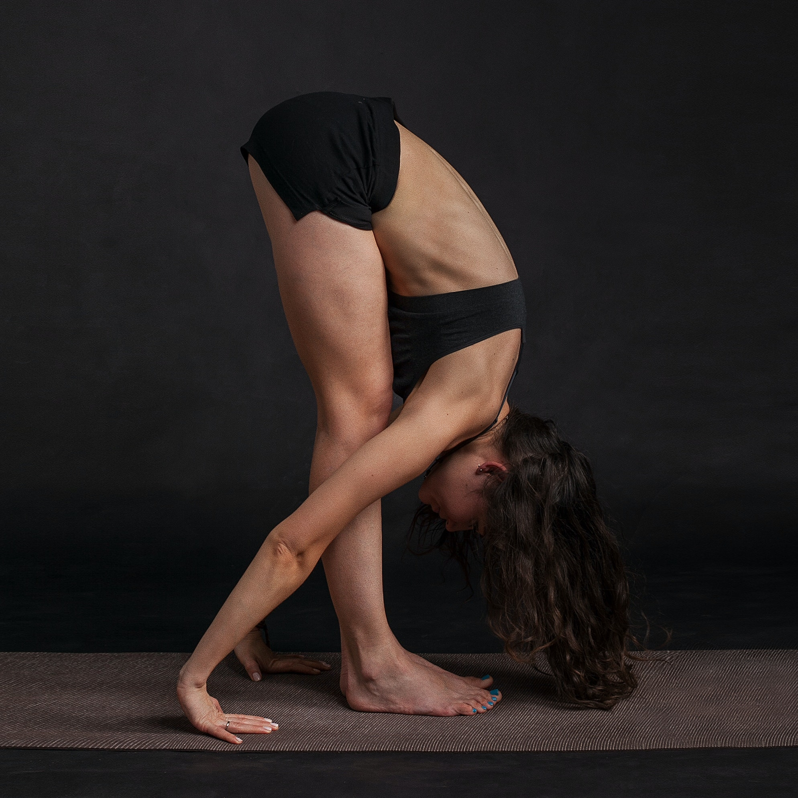

Current pose:
standing forward fold with straight back
Adjacent poses:
standing forward fold
|
left-right symmetric
source:
Yoga Journal
standing forward fold

source
source:
Yoga Journal
http://bhpayne.github.io/yoga_graph/
Ben Payne
ben.is.located AT gmail